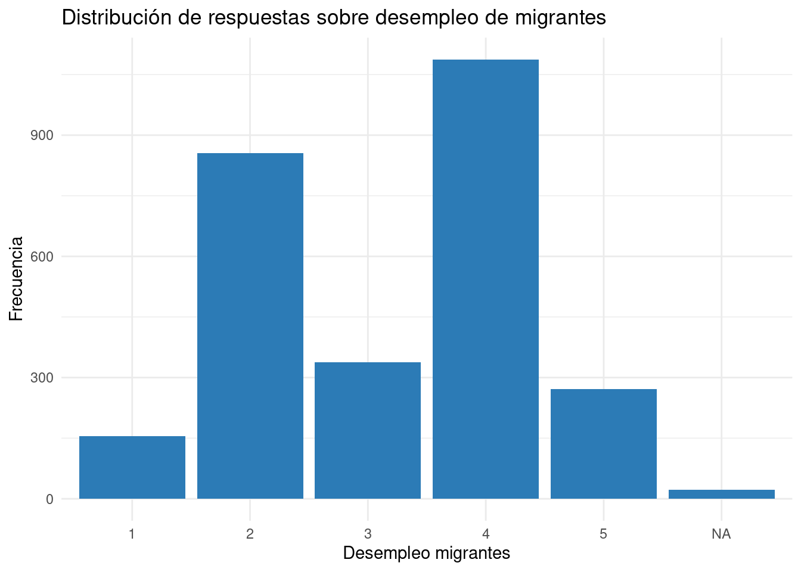
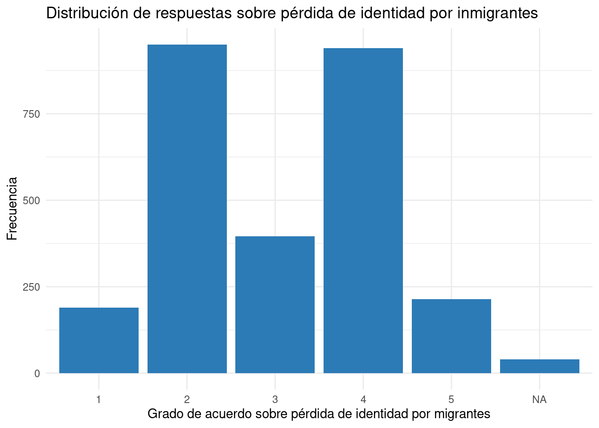
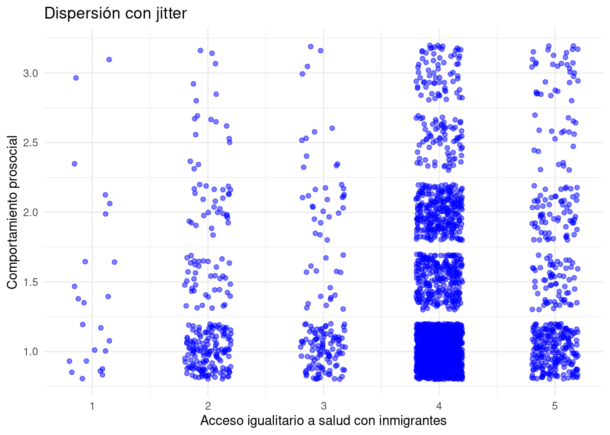
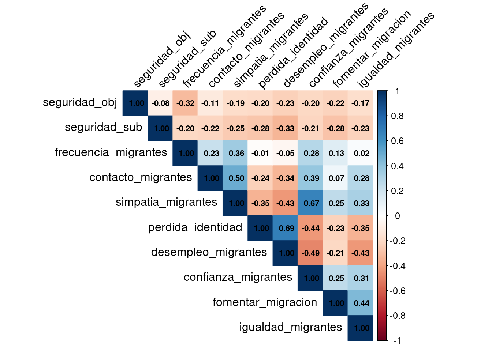
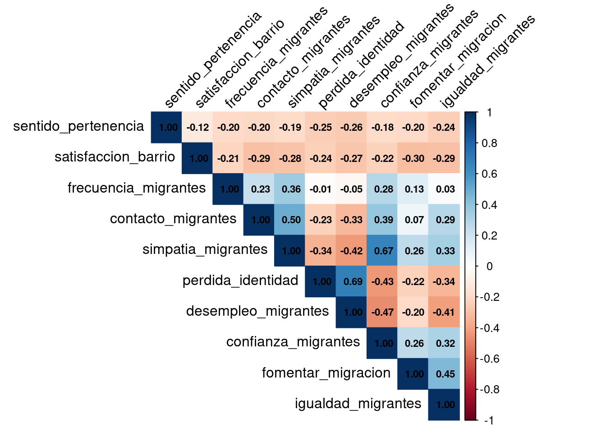
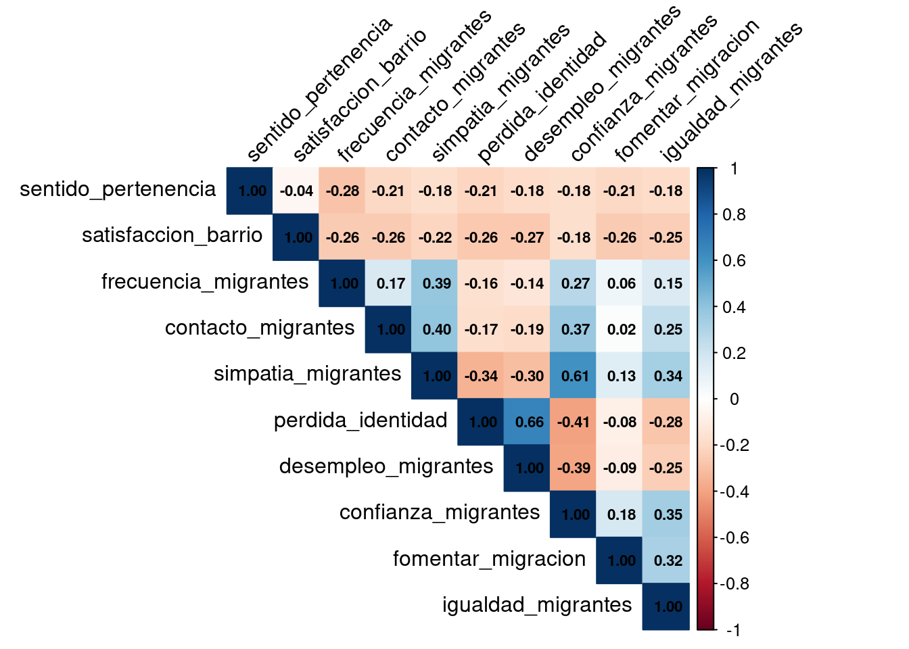

| var | label | n | NA.prc | mean | sd | range | |
|---|---|---|---|---|---|---|---|
| 5 | frecuencia_migrantes | Frecuencia de contacto con [PER/HAI/VEN] | 0 | 100.00 | NaN | NA | -Inf (Inf--Inf) |
| 2 | contacto_migrantes | Contacto positivo con [PER/HAI/VEN] | 0 | 100.00 | NaN | NA | -Inf (Inf--Inf) |
| 8 | simpatia_migrantes | Grado de simpatia por [PER/HAI/VEN] que viven en Chile | 2610 | 4.74 | 2.93 | 1.14 | 4 (1-5) |
| 7 | perdida_identidad | Grado de acuerdo: Chile pierde su identidad con llegada de [PER/HAI/VEN] | 2709 | 1.13 | 2.96 | 1.16 | 4 (1-5) |
| 3 | desempleo_migrantes | Grado de acuerdo: Con llegada de [PER/HAI/VEN] aumenta el desempleo | 2709 | 1.13 | 3.23 | 1.15 | 4 (1-5) |
| 1 | confianza_migrantes | Grado de confianza en [PER/HAI/VEN] | 2654 | 3.14 | 2.53 | 1.02 | 4 (1-5) |
| 4 | fomentar_migracion | Grado de acuerdo: Fomentar migracion de [PER/HAI/VEN] calificados | 2700 | 1.46 | 3.30 | 1.05 | 4 (1-5) |
| 6 | igualdad_migrantes | Grado de acuerdo: Migrantes [PER/HAI/VEN] acceso a salud igualitario | 2720 | 0.73 | 3.89 | 0.79 | 4 (1-5) |
5 Bivariados
5.1 Descriptivos de migración
| var | label | n | NA.prc | mean | sd | range | |
|---|---|---|---|---|---|---|---|
| 5 | frecuencia_migrantes | Frecuencia de contacto con [PER/HAI/VEN] | 2729 | 0.04 | 1.85 | 1.13 | 4 (1-5) |
| 2 | contacto_migrantes | Contacto positivo con [PER/HAI/VEN] | 1205 | 55.86 | 3.55 | 0.92 | 4 (1-5) |
| 8 | simpatia_migrantes | Grado de simpatia por [PER/HAI/VEN] que viven en Chile | 2564 | 6.08 | 2.82 | 1.08 | 4 (1-5) |
| 7 | perdida_identidad | Grado de acuerdo: Chile pierde su identidad con llegada de [PER/HAI/VEN] | 2690 | 1.47 | 3.01 | 1.14 | 4 (1-5) |
| 3 | desempleo_migrantes | Grado de acuerdo: Con llegada de [PER/HAI/VEN] aumenta el desempleo | 2708 | 0.81 | 3.17 | 1.15 | 4 (1-5) |
| 1 | confianza_migrantes | Grado de confianza en [PER/HAI/VEN] | 2609 | 4.43 | 2.58 | 1.01 | 4 (1-5) |
| 4 | fomentar_migracion | Grado de acuerdo: Fomentar migracion de [PER/HAI/VEN] calificados | 2698 | 1.17 | 3.33 | 1.09 | 4 (1-5) |
| 6 | igualdad_migrantes | Grado de acuerdo: Migrantes [PER/HAI/VEN] acceso a salud igualitario | 2719 | 0.40 | 3.89 | 0.77 | 4 (1-5) |


5.2 Creación de índices
Para realizar los cruces de las subdimensiones de la cohesión social con migración, se construyen índices de los promedios de los indicadores que conforman los constructos validados en la sección anterior.
Note
Si bien, en la sección de análisis de constructos estos se entendieron como factores, para efectos prácticos de difusión se decidió aplicar una construcción de índices, ya que esto permite que los valores se mantengan en la escala original en que fueron medidas las variables, lo cual facilita su interpretación al momento de presentar resultados.
elsoc_5 <- elsoc_5 %>%
mutate(comportamiento_prosocial = rowMeans(select(., reunion_pub, voluntariado), na.rm = TRUE))elsoc_5 <- elsoc_5 %>%
mutate(ayuda_economica = rowMeans(select(., prestar_dinero, ayuda_trabajo), na.rm = TRUE))elsoc_5 <- elsoc_5 %>%
mutate(confianza_inter = rowMeans(select(., confianza_gen, altruismo_gen), na.rm = TRUE))elsoc_6 <- elsoc_6 %>%
mutate(seguridad_sub = rowMeans(select(., seguridad_sat, seguridad_perc), na.rm = TRUE))elsoc_6 <- elsoc_6 %>%
mutate(seguridad_obj = rowMeans(select(., peleas_calle, asaltos, trafico_drogas), na.rm = TRUE))elsoc_6 <- elsoc_6 %>%
mutate(
# Calcular promedio de las variables
sentido_pertenencia = rowMeans(select(., barrio_ideal, barrio_integracion, barrio_identidad, barrio_pertenencia), na.rm = TRUE))elsoc_6 <- elsoc_6 %>%
mutate(satisfaccion_barrio = rowMeans(select(., barrio_amigos, barrio_sociable, barrio_cordial, barrio_colaborador), na.rm = TRUE))PROBAR subir el valor al momento de recodificar
5.3 Correlaciones
5.3.1 Correlación seguridad
5.3.2 Correlación de Spearman
corrsegmig <- round(cor(seg_mig, use = "pairwise.complete.obs", method = "spearman"), 2)La Figure 5.3 refleja las correlaciones de Spearman entre los índices de seguridad y los indicadores de migración. Se observa la mayoría de los indicadores de migración tienen una correlación bastante baja con ambos índices de seguridad. Las asociaciones más altas las tiene la seguridad subjetiva con confianza en migrantes (.14) y con simpatía hacia los migrantes (.10).
5.3.3 Correlaciones policóricas
poly_cor <- polychoric(seg_mig)En Figure 5.4 se observa una matriz de correlaciones policóricas. En este caso, la mayoría de las correlaciones son bajas, destacando seguridad subjetiva con desempleo debido a inmigrantes con un -.25, entiéndose que mientras más acuerdo hay con que la llegada de inmigrantes al país causa desempleo, menor es la sensación de seguridad. En la misma lógica se correlacionan seguridad subjetiva con pérdida de identidad, en donde, a menor seguridad subjetiva, mayor acuerdo con que los inmigrantes hacen que Chile pierda identidad.
5.4 Correlación vínculos territoriales
5.4.1 Correlación de Spearman
barrio_mig <- elsoc_6 %>%
select(sentido_pertenencia, satisfaccion_barrio, frecuencia_migrantes, contacto_migrantes, simpatia_migrantes,
perdida_identidad, desempleo_migrantes, confianza_migrantes,
fomentar_migracion, igualdad_migrantes)corrbarriomig <- round(cor(barrio_mig, use = "pairwise.complete.obs", , method = "spearman"), 2)En Figure 5.5 se pueden ver los cruces entre los índices de vinculación territorial con los indicadores de migración. Las correlaciones entre las mediciones de territorio y la migración son en general bajas, siendo satisfacción del barrio con confianza en migrantes la más alta (.12).
5.4.2 Correlaciones policóricas
poly_cor2 <- polychoric(barrio_mig)
En Figure 5.6 se observa la matriz de correlaciones policóricas que contiene los índices de vinculación territorial e indicadores de migración. La mayoría de las correlaciones son bajas. El índice de sentido de pertenencia correlaciona en un -.22 con frecuencia con inmigrantes, entendiéndose que a mayor sentido de pertenencia del barrio, menor se frecuenta con inmigrantes.
5.5 Correlación redes sociales
redes_mig <- elsoc_5 %>%
select(comportamiento_prosocial, ayuda_economica, confianza_inter, frecuencia_migrantes, contacto_migrantes, simpatia_migrantes,
perdida_identidad, desempleo_migrantes, confianza_migrantes,
fomentar_migracion, igualdad_migrantes)5.5.1 Correlación de Spearman
corredesmig <- round(cor(redes_mig, use = "pairwise.complete.obs", method = "spearman"), 2)
5.5.2 Correlaciones policóricas
poly_cor3 <- polychoric(redes_mig)Item = frecuencia_migrantes had no variance and was deletedItem = contacto_migrantes had no variance and was deletedWarning in polychoric(redes_mig): The items do not have an equal number of
response alternatives, global set to FALSE.Warning in matpLower(x, nvar, gminx, gmaxx, gminy, gmaxy): 8 cells were
adjusted for 0 values using the correction for continuity. Examine your data
carefully.Warning in cor.smooth(mat): Matrix was not positive definite, smoothing was
done
En Figure 5.8 se presenta las correlaciones policóricas entre los índices de redes sociales (comportamiento prosocial y ayuda económica) y los indicadores de migración. En la matriz se pueden observar algunas correlaciones moderadas, tal como la asociación entre comportamiento prosocial e igualdad con inmigrantes (-.38). Esto quiere decir que, a mayor comportamiento prosocial, hay un mayor desacuerdo con que los inmigrantes tengan un acceso igualitario a la salud. En la misma lógica se presenta la asociación entre el índice de confianza interpersonal con desempleo debido a inmigrantes (-.30), queriendo decir que a menor confianza interpersonal, hay un mayor acuerdo respecto a la idea de los inmigrantes aumentan el desempleo en el país.
Warning: Removed 28 rows containing missing values or values outside the scale range
(`geom_point()`).

En Figure 5.9 se observa la distribución de los valores entre el índice de comportamiento prosocial y el indicador de igualdad en salud con inmigrantes. La densidad de las respuestas se concentra mayoritariamente en la parte inferior derecha del gráfico, lo que indica una asociación negativa entre las dos variables. Se puede interpretar que, cuando las personas no han cometido actos a favor del vínculo social, están de acuerdo con que los inmigrantes tengan acceso a la salud de la misma forma que los chilenos.
6 Moderación de correlaciones (género y nivel educacional)
En orden de encontrar asociaciones con mayor efecto y que, en consecuencia, puedan ser insumos relevantes para el segundo foro, se aplican las mismas correlaciones que en el punto anterior, pero esta vez filtrando por género (hombre/mujer) y nivel educacional(universitario/no universitario).
6.1 Seguridad por género
seguridad_genero <- elsoc_6 %>%
select(sexo, seguridad_obj, seguridad_sub, frecuencia_migrantes, contacto_migrantes, simpatia_migrantes,
perdida_identidad, desempleo_migrantes, confianza_migrantes,
fomentar_migracion, igualdad_migrantes)seguridad_hombres <- seguridad_genero %>%
filter(sexo==0)
seguridad_mujeres <- seguridad_genero %>%
filter(sexo==1)seguridad_hombres <- seguridad_hombres %>%
select(-c(sexo))
seguridad_mujeres <- seguridad_mujeres %>%
select(-c(sexo))poly_cor4 <- polychoric(seguridad_hombres)
poly_cor5 <- polychoric(seguridad_mujeres)Correlaciones relevantes: Seguridad objetiva y frencuencia con inmigrantes (-.28). Seguridad objetiva y contacto con inmigrantes (-.27) Seguridad subjetiva con fomentar la migración legal (-26).
Correlaciones relevantes: Seguridad objetiva y frencuencia con inmigrantes (-.28).
6.2 Seguridad por educación
seguridad_educ <- elsoc_6 %>%
select(educacion, seguridad_obj, seguridad_sub, frecuencia_migrantes, contacto_migrantes, simpatia_migrantes,
perdida_identidad, desempleo_migrantes, confianza_migrantes,
fomentar_migracion, igualdad_migrantes)seguridad_titulo <- seguridad_educ %>%
filter(educacion==1)
seguridad_notitulo <- seguridad_educ %>%
filter(educacion==0)seguridad_titulo <- seguridad_titulo %>%
select(-c(educacion))
seguridad_notitulo <- seguridad_notitulo %>%
select(-c(educacion))poly_cor6 <- polychoric(seguridad_titulo)
poly_cor7 <- polychoric(seguridad_notitulo)

Correlaciones relevantes: Seguridad subjetiva y desempleo debido a inmigrantes (-.30. Seguridad objetiva y frecuencia inmigrantes (-.29).
Correlaciones relevantes: Seguridad objetiva y frecuencia inmigrantes (-.28).
6.3 Vínculos territoriales por género
barrio_genero <- elsoc_6 %>%
select(sexo, sentido_pertenencia, satisfaccion_barrio, frecuencia_migrantes, contacto_migrantes, simpatia_migrantes, perdida_identidad, desempleo_migrantes, confianza_migrantes,
fomentar_migracion, igualdad_migrantes)barrio_hombres <- barrio_genero %>%
filter(sexo==0)
barrio_mujeres <- barrio_genero %>%
filter(sexo==1)barrio_hombres <- barrio_hombres %>%
select(-c(sexo))
barrio_mujeres <- barrio_mujeres %>%
select(-c(sexo))poly_cor8 <- polychoric(barrio_hombres)
poly_cor9 <- polychoric(barrio_mujeres)Correlaciones relevantes: Sentido de pertenencia y frecuencia con inmigrantes (-.25).

Correlaciones relevantes: Sentido de pertenencia y frecuencia con inmigrantes (-.21).
6.4 Vínculos territoriales por educación
barrio_educ <- elsoc_6 %>%
select(educacion, sentido_pertenencia, satisfaccion_barrio, frecuencia_migrantes, contacto_migrantes, simpatia_migrantes,
perdida_identidad, desempleo_migrantes, confianza_migrantes,
fomentar_migracion, igualdad_migrantes)barrio_titulo <- barrio_educ %>%
filter(educacion==1)
barrio_notitulo <- barrio_educ %>%
filter(educacion==0)barrio_titulo <- barrio_titulo %>%
select(-c(educacion))
barrio_notitulo <- barrio_notitulo %>%
select(-c(educacion))poly_cor10 <- polychoric(barrio_titulo)Warning in cor.smooth(mat): Matrix was not positive definite, smoothing was
donepoly_cor11 <- polychoric(barrio_notitulo)

Correlaciones relevantes: Satisfacción con el barrio y desempleo debido a inmigrantes (-.29). Satisfacción con el barrio y pérdida de identidad del país debido a inmigrantes (-.26). Sentido de pertenencia y desempleo debido a inmigrantes (-.25).

Correlaciones relevantes: Sentido de pertenencia y frecuencia con inmigrantes (-.23). ## Redes por género
redes_genero <- elsoc_5 %>%
select(sexo, comportamiento_prosocial, ayuda_economica, confianza_inter, frecuencia_migrantes, contacto_migrantes, simpatia_migrantes,
perdida_identidad, desempleo_migrantes, confianza_migrantes,
fomentar_migracion, igualdad_migrantes)redes_hombres <- redes_genero %>%
filter(sexo==0)
redes_mujeres <- redes_genero %>%
filter(sexo==1)redes_hombres <- redes_hombres %>%
select(-c(sexo))
redes_mujeres <- redes_mujeres %>%
select(-c(sexo))poly_cor12 <- polychoric(redes_hombres)Item = frecuencia_migrantes had no variance and was deletedItem = contacto_migrantes had no variance and was deletedWarning in polychoric(redes_hombres): The items do not have an equal number of
response alternatives, global set to FALSE.Warning in matpLower(x, nvar, gminx, gmaxx, gminy, gmaxy): 12 cells were
adjusted for 0 values using the correction for continuity. Examine your data
carefully.Warning in cor.smooth(mat): Matrix was not positive definite, smoothing was
donepoly_cor13 <- polychoric(redes_mujeres)Item = frecuencia_migrantes had no variance and was deleted
Item = contacto_migrantes had no variance and was deletedWarning in polychoric(redes_mujeres): The items do not have an equal number of
response alternatives, global set to FALSE.Warning in matpLower(x, nvar, gminx, gmaxx, gminy, gmaxy): 9 cells were
adjusted for 0 values using the correction for continuity. Examine your data
carefully.Warning in cor.smooth(mat): Matrix was not positive definite, smoothing was
done
Correlaciones relevantes: Comportamiento prosocial y acceso igualitario a salud con inmigrantes (-.35). Comportamiento prosocial y desempleo debido a inmigrantes (-.29). Confianza interpersonal y desempleo debido a inmigrantes (-.29). Ayuda económica y fomentar la migración legal (-.28).
Correlaciones relevantes: Comportamiento prosocial y acceso igualitario a salud con inmigrantes (-.40). Comportamiento prosocial y desempleo debido a inmigrantes (-.38). Confianza interpersonal y desempleo debido a inmigrantes (-.31). Ayuda económica y desempleo debido a inmigrantes (-.31).
6.5 Redes por educación
redes_educ <- elsoc_5 %>%
select(educacion, comportamiento_prosocial, ayuda_economica, confianza_inter, frecuencia_migrantes, contacto_migrantes, simpatia_migrantes,
perdida_identidad, desempleo_migrantes, confianza_migrantes,
fomentar_migracion, igualdad_migrantes)redes_titulo <- redes_educ %>%
filter(educacion==1)
redes_notitulo <- redes_educ %>%
filter(educacion==0)redes_titulo <- redes_titulo %>%
select(-c(educacion))
redes_notitulo <- redes_notitulo %>%
select(-c(educacion))poly_cor14 <- polychoric(redes_titulo)Item = frecuencia_migrantes had no variance and was deletedItem = contacto_migrantes had no variance and was deletedWarning in polychoric(redes_titulo): The items do not have an equal number of
response alternatives, global set to FALSE.Warning in matpLower(x, nvar, gminx, gmaxx, gminy, gmaxy): 17 cells were
adjusted for 0 values using the correction for continuity. Examine your data
carefully.Warning in cor.smooth(mat): Matrix was not positive definite, smoothing was
donepoly_cor15 <- polychoric(redes_notitulo)Item = frecuencia_migrantes had no variance and was deleted
Item = contacto_migrantes had no variance and was deletedWarning in polychoric(redes_notitulo): The items do not have an equal number of
response alternatives, global set to FALSE.Warning in matpLower(x, nvar, gminx, gmaxx, gminy, gmaxy): 8 cells were
adjusted for 0 values using the correction for continuity. Examine your data
carefully.Warning in cor.smooth(mat): Matrix was not positive definite, smoothing was
doneCorrelaciones relevantes: Ayuda económica y confianza en inmigrantes (-.32). Comportamiento prosocial e igualdad en acceso a la salud con inmigrantes (-.31).

Correlaciones relevantes: Comportamiento prosocial e igualdad en acceso a la salud con inmigrantes (-.40). Comportamiento prosocial y desempleo debido a inmigrantes (-.36). Confianza interpersonal y desempleo debido a inmigrantes (-.31).
7 Visualizaciones
elsoc_5_graph <- elsoc_5 %>%
mutate(comportamiento_prosocial = rowMeans(select(., reunion_pub, voluntariado), na.rm = TRUE))
elsoc_5_graph <- elsoc_5_graph %>%
mutate(comportamiento_prosocial = case_when(
comportamiento_prosocial <= 1.5 ~ 1,
comportamiento_prosocial >= 2 ~ 0
))elsoc_5_graph <- elsoc_5_graph %>%
mutate(ayuda_economica = rowMeans(select(., prestar_dinero, ayuda_trabajo), na.rm = TRUE))
elsoc_5_graph <- elsoc_5_graph %>%
mutate(ayuda_economica = case_when(
ayuda_economica <= 1.5 ~ 1,
ayuda_economica >= 2 ~ 0
))elsoc_5_graph <- elsoc_5_graph %>%
mutate(confianza_inter = rowMeans(select(., confianza_gen, altruismo_gen), na.rm = TRUE))
elsoc_5_graph <- elsoc_5_graph %>%
mutate(confianza_inter = case_when(
confianza_inter <= 1.5 ~ 1,
confianza_inter >= 2 ~ 0
))elsoc_6_graph <- elsoc_6 %>%
mutate(seguridad_sub = rowMeans(select(., seguridad_sat, seguridad_perc), na.rm = TRUE))
elsoc_6_graph <- elsoc_6_graph %>%
mutate(seguridad_sub = case_when(
seguridad_sub <= 2.5 ~ 1,
seguridad_sub >= 3 ~ 0
))elsoc_6_graph <- elsoc_6_graph %>%
mutate(seguridad_obj = rowMeans(select(., peleas_calle, asaltos, trafico_drogas), na.rm = TRUE))
elsoc_6_graph <- elsoc_6_graph %>%
mutate(seguridad_obj = case_when(
seguridad_obj <= 2.5 ~ 1,
seguridad_obj >= 3 ~ 0
))elsoc_6_graph <- elsoc_6_graph %>%
mutate(
# Calcular promedio de las variables
sentido_pertenencia = rowMeans(select(., barrio_ideal, barrio_integracion, barrio_identidad, barrio_pertenencia), na.rm = TRUE))
elsoc_6_graph <- elsoc_6_graph %>%
mutate(sentido_pertenencia = case_when(
sentido_pertenencia <= 2.5 ~ 1,
sentido_pertenencia >= 3 ~ 0
))elsoc_6_graph <- elsoc_6_graph %>%
mutate(satisfaccion_barrio = rowMeans(select(., barrio_amigos, barrio_sociable, barrio_cordial, barrio_colaborador), na.rm = TRUE))
elsoc_6_graph <- elsoc_6_graph %>%
mutate(satisfaccion_barrio = case_when(
satisfaccion_barrio <= 2.5 ~ 1,
satisfaccion_barrio >= 3 ~ 0
))7.1 Gráficos migración
elsoc_5_graph <- elsoc_5_graph %>%
mutate(desempleo_migrantes = case_when(
desempleo_migrantes <= 2 ~ 1,
desempleo_migrantes == 3 ~ 2,
desempleo_migrantes >= 4 ~ 3
))elsoc_5_graph <- elsoc_5_graph %>%
mutate(contacto_migrantes = case_when(
contacto_migrantes <= 2 ~ 1,
contacto_migrantes == 3 ~ 2,
contacto_migrantes >= 4 ~ 3
))elsoc_5_graph <- elsoc_5_graph %>%
mutate(simpatia_migrantes = case_when(
simpatia_migrantes <= 2 ~ 1,
simpatia_migrantes == 3 ~ 2,
simpatia_migrantes >= 4 ~ 3
))elsoc_5_graph <- elsoc_5_graph %>%
mutate(igualdad_migrantes = case_when(
igualdad_migrantes <= 2 ~ 1,
igualdad_migrantes == 3 ~ 2,
igualdad_migrantes >= 4 ~ 3
))elsoc_5_graph <- elsoc_5_graph %>%
mutate(perdida_identidad = case_when(
perdida_identidad <= 2 ~ 1,
perdida_identidad == 3 ~ 2,
perdida_identidad >= 4 ~ 3
))elsoc_6_graph <- elsoc_6_graph %>%
mutate(desempleo_migrantes = case_when(
desempleo_migrantes <= 2 ~ 1,
desempleo_migrantes == 3 ~ 2,
desempleo_migrantes >= 4 ~ 3
))elsoc_6_graph <- elsoc_6_graph %>%
mutate(contacto_migrantes = case_when(
contacto_migrantes <= 2 ~ 1,
contacto_migrantes == 3 ~ 2,
contacto_migrantes >= 4 ~ 3
))elsoc_6_graph <- elsoc_6_graph %>%
mutate(simpatia_migrantes = case_when(
simpatia_migrantes <= 2 ~ 1,
simpatia_migrantes == 3 ~ 2,
simpatia_migrantes >= 4 ~ 3
))elsoc_6_graph <- elsoc_6_graph %>%
mutate(igualdad_migrantes = case_when(
igualdad_migrantes <= 2 ~ 1,
igualdad_migrantes == 3 ~ 2,
igualdad_migrantes >= 4 ~ 3
))elsoc_6_graph <- elsoc_6_graph %>%
mutate(perdida_identidad = case_when(
perdida_identidad <= 2 ~ 1,
perdida_identidad == 3 ~ 2,
perdida_identidad >= 4 ~ 3
))Scale for fill is already present.
Adding another scale for fill, which will replace the existing scale.7.2 Seguridad transversal
7.3 Vínculos territoriales transversal
7.5 Seguridad por género
seguridad_genero <- elsoc_6_graph %>%
select(sexo, seguridad_obj, seguridad_sub, contacto_migrantes, simpatia_migrantes,
perdida_identidad, desempleo_migrantes, igualdad_migrantes)seguridad_hombres <- seguridad_genero %>%
filter(sexo==0)
seguridad_mujeres <- seguridad_genero %>%
filter(sexo==1)seguridad_hombres <- seguridad_hombres %>%
select(-c(sexo))
seguridad_mujeres <- seguridad_mujeres %>%
select(-c(sexo))seg_interact <- a / b
seg_interact7.6 Seguridad por educación
seguridad_educ <- elsoc_6_graph %>%
select(educacion, seguridad_obj, seguridad_sub, contacto_migrantes, simpatia_migrantes,
perdida_identidad, desempleo_migrantes, igualdad_migrantes)seguridad_titulo <- seguridad_educ %>%
filter(educacion==1)
seguridad_notitulo <- seguridad_educ %>%
filter(educacion==0)seguridad_titulo <- seguridad_titulo %>%
select(-c(educacion))
seguridad_notitulo <- seguridad_notitulo %>%
select(-c(educacion))seg_interact_ed <- d / c
seg_interact_ed7.7 Vínculos territoriales por género
barrio_genero <- elsoc_6_graph %>%
select(sexo, sentido_pertenencia, satisfaccion_barrio, contacto_migrantes, simpatia_migrantes,
perdida_identidad, desempleo_migrantes, igualdad_migrantes)barrio_hombres <- barrio_genero %>%
filter(sexo==0)
barrio_mujeres <- barrio_genero %>%
filter(sexo==1)barrio_hombres <- barrio_hombres %>%
select(-c(sexo))
barrio_mujeres <- barrio_mujeres %>%
select(-c(sexo))barrio_interact <- e / f
barrio_interact7.8 Vínculos territoriales por educación
barrio_educ <- elsoc_6_graph %>%
select(educacion, sentido_pertenencia, satisfaccion_barrio, contacto_migrantes, simpatia_migrantes,
perdida_identidad, desempleo_migrantes, igualdad_migrantes)barrio_titulo <- barrio_educ %>%
filter(educacion==1)
barrio_notitulo <- barrio_educ %>%
filter(educacion==0)barrio_titulo <- barrio_titulo %>%
select(-c(educacion))
barrio_notitulo <- barrio_notitulo %>%
select(-c(educacion))barrio_interact_ed <- g / h
barrio_interact_ed